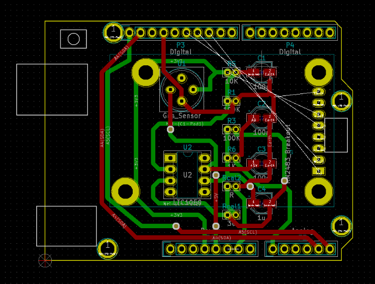
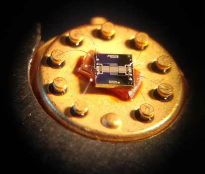
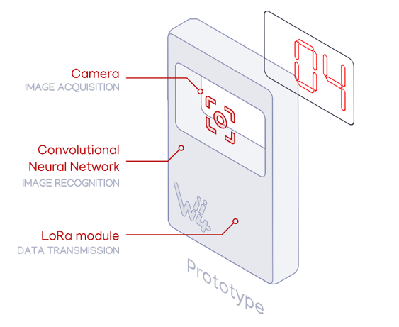
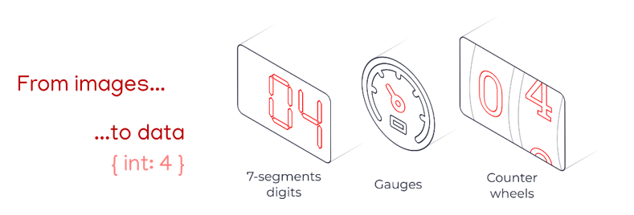

Portifolio
Descriptive
In this part of my portfolio, you'll find a brief description of my experiences on the 5th year ISS teaching program at INSA Toulouse. I'll highlight some key aspects of each course and my role in each of them.
UF: Smart Devices
Microcontrollers and Open-Source Hardware (MOSH)

In this course, the aim was to design an Arduino shield to integrate a nanoparticle gas sensor and send the data collected from the sensor through a connected antenna LoRa (radio communication technology). This system should be capable of monitoring the level of CO2 in a room and then send this information to a LoRaWAN using The Things Network (TTN) platform. We can divide the work done in this course into two parts:
1- Constructing a PCB Arduino Shield using an open source software Kicad
2- Work on the Arduino
My role: For this project I worked in a group with people from different specialities, Lucie Bechtet (from Physical Engineering) and Philippe Hérail (from Computer and Network engineering). So we could divide the work really well accordingly to each one’s experiences and backgrounds. Thus, I worked on the construction of the PCB: the conception of the electronic circuit, the schematics and the placing and routing of the components on the PCB.
CAD, manufacturing and integration of nano-sensor

In this course the idea was to understand how a sensor actually works, from a physics, electronics and metrology point of view. This course integrated the theoretical courses we had in sensors introduction and a practical work at INSA’s micro-nano electronics (AIME) laboratory (to manufacture of the gas sensor and take measures to characterize the componenents.
At the end, we were required to assemble the theoretical and practical knowledge to elaborate a datasheet of the manufactured gas sensor. This is also the sensor we used to build the Arduino shield during the MOSH course.
My role: As I'm currently in a professionalisation contract, I wasn't present to all of the sections in manufacturing the gas sensor. I could only participate on the last sessions (taking measurements) and the elaboration of the datasheet.
Sensors Introduction
The aim of this course was to present a theoretical basis on sensors. Understand fundamental notions of sensors, data acquisition: physics, electronics and metrology point of view. This course was divided into a theoretical classes taken online and driven work sessions to resolve exercises related to the online course.
Analog eletronics lab
During this classes, we could remember concepts on impedation adaptance circuits and types of noises and ways to filter them. Also, we used the LTSpice software to simulate circuits, including the communicating gas sensor circuit from the MOSH project.
UF: Communication
Protocols for connected objects
In this course we studied wireless communication protocols for IoT applications. The format of the course was mostly active learning, by group presentations on defined topics followed by class discussions. This course was divided in the following topics:
To see the reports and presentations made on each of the topics, click on the button below.
Digital wireless communications for connected objects
In this course we studied multiple types of wireless communication protocols for IoT applications. To evaluate what we've learned, we were given an exercise to study one of the protocols seen during the theorical classes: the Bluetooth Low Energy. We had to make an analysis of its modulation, paquet structure, frequency range, calculation of the indoor and outdoor propagation range, etc.
Alongside with Fu Yimin, Noël Taillardat, and Poonkuzhali Pajanissamy I worked on writting the report, and doing the calculations on indoor and outdoor propagations for the frequency ranges.
So, below you can find our study case on the BLE protocol as well as a link to download it.
Energy for connected objects (recovery, transfert)
During the lectures, we discovered how to supply our system with energy, how to store energy and how to evaluate energy consumption.
Security for network of connected objects
In this course we attended theoretical lectures about one of the main topics involving IoT: security. In the lectures it was presented to us the main concepts in security: confidentiality, integrity, safety, availability, reliability and confidentiality.
We learned more about the IoT architecture, the practical attacks, threats and risks and how they could be prevented.
However, as it remains a purely theoretical course, I don't think I could be able to apply this knowledge quickly.
Emerging network (SDN, NDN)
This course was divided into theorical lessons and practical works. During the lectures, we learned about emerging networks, in particular the SDN and NDN.
The idea of WSN technologies is to collect data data from remote devices (sensor, nodes). So the biggest limitations in this type of technologies comes from the nature of its own components. WSN are subjected to power supply limitations, low power and lossy network (LLN) and memory limitations.
To address this limitation, the SDN became a new networking paradigm that has been evolving through the years. The traditional routing protocols are substituted by a new centralized approach where the control of the network is transferred to some central elements, called “controllers”. They determine the flux and inform decision through a plane controller layer.
During the practical works we could implement the knowledge acquired during the lectures.
UF: Middleware and Services
Service Oriented Architecture
In this module we learned about Service Oriented Architecture (SOA), architecture which consists in the creation of services (i.e., functionalities) that can be implemented by application components using a communication protocol via a network. So these services can be accessed remotely and acted upon.
First of all, we studied and we deployed applications using Services Web SOAP, BPEL and Service RESTful. All these three architectures are made to allow Web services in a service-oriented architecture (SOA) to interconnect and share data.
After that, as a final project for this module we made an application capable of managing automatically INSA’s rooms. The application is capable of automatically turning on/off all the computers in a room, the heaters and closing/opening the shutters. These actions are based on the information received from sensors located in these rooms. For the organisation of this project we used the Agile method, defining sprints accordingly to our advancements on the project.
For more technical details on the developed project, please click on the button below:
Middleware for the Internet of Things

A wide range of technologies work together to connect things in the Internet of Things (IoT) and there are lots of existing wired and wireless protocols such as Ethernet, Rs-232, Wi-Fi, Bluetooth, Cellular, Zig Bee, Z-Wave, Thread, 802.15.4, 6LoWPAN, Sigfox, LoRaWAN, etc. In this module we learned about OneM2M, which is an open-source platform that ensures the interoperability of M2M and IoT services. With this tool we could make devices using different technologies communicate between themselves thanks to this Middleware solution.
This module was divided into theoretical classes attended by distance via Openclassroom and practical works. To know more about the work developed during the practical works click in the button below for more details:
Adaptability: Cloud and Autonomic Computing
Cloud computing is a very recurrent term in the Internet of Things domain. It basically consists in the delivery of hosted services — such as servers, databases, networking, software, etc — over the Internet (“the cloud”). In the first part of this course, we learned about Virtual Machines and Containers: how they work, how they’re implemented, what can they do and how to deploy them.
In the following part, we learned more about the concept of "cloud" by provisioning end-user applications in different cloud applications: Google Cloud, Cloud Foundry and Jelastic.
At the end of the practical sessions we produced a report explaining all the activities we did during this module. To find more about it, please feel free to click in the button below:
UF: Analysis and data processing
Software Engineering
Software engineering is really important to design, develop, maintain and test a computer software. And it’s a really important part of our formation to get to know techniques and tools that could help us as engineers to develop projects in an efficient way.
Several development methods were presented to us during the software engineering course: waterfall, iterative spiral development, V-model and Agile method. These methods aims to optimise project development life cycle and avoiding risks and preventing risks and in the final delivery product.
During the Autonomous Vision project and the INSA’s rooms management project, we could put into practice the concepts showed to us during this classes.
To see more about some of the project management tools we used in these projects, click the button below.
Semantic Data
The Semantic Web is an area that is becoming increasingly important in IT and IoT. With the volume of data increasing exponentially comes the need to establish more and more relations between these data so we can create more intelligent and interoperable devices. The aim is to enrich collected data by linking it to ontologies and to facilitate the exchange of data in the IoT field. So, the semantic data is a treatment of data process based on creating relationships
between symbols (the data) and the real world.
In this course module, we had theoretical classes to learn the basic principles of data semantics and then two TP sessions where we could apply what we’d learned. To see more about the work developed on this module, feel welcome to click on the button below:
Big data
During this course we learned about how data can be analysed computationally to reveal patterns, trends, and associations , related to the world we live in. Through the theoretical courses we learned about the fundamental principles of big data, including statistical formulations and important theorems.
We also learned about how to use the R programming language to manipulate big volumes of data and we could put the theoretical knowledge into practice during the TP sessions.
At the end of this module I teamed up with Vu Diep to analyse a big open source dataset using all the skills we learned during the practical works. To get more information about the work we did, please click on the button below:
Innovative Project
Eyemb: Autonomous Vision

This project is part of our 5th year Innovative and Smart Systems (ISS) teaching program, taking part in the Innovative project module. The idea is to put into practice our technical skills acquired during our time at INSA, as well as an approach to other aspects of our formation, such as communication, teamwork and project management.
This project consisted in prototyping an autonomous embedded solution capable of recognizing images and transmitting data. More specifically, it should be able to read machine indicators (digits, gauges), process the computing image on board and only transmit deciphered data. We focused on LCD’s digits recognition and basing our solution on Neural Networks to recognize data.

These digits read could represent temperature from real LCD screens, as from refrigerators of restaurants and food industries. The motivation behind this project is to propose an innovative and smart way to monitor and transmit data from those indicators, to avoid food from being spoiled unnecessarily.
With this autonomous vision project, we had the opportunity to work in an innovative project with an actual client from the industry, Ludovic Tancerel representant of the Wiifor company.
If you're interested to see more about the technical aspects of this project, please feel welcome to click in the button just below.
UF: Innovation and humanity
As I’m doing a professionalization contract, in this UF I follow a slightly different program. Some activities such as Team Management, Sport and Individualized professional development I don’t follow the regular course. I’m taking these lectures another time alongside other students in professionalization contract.
So until now, the only modules I fully completed were: Innovation and Creativity/TRIZ methods.
Innovation
In this course we discovered some of these concepts in the Innovation, Social Acceptability and Business Development. As a student in Innovative Smart Systems, I find these types of courses really essential for my formation. We, as engineers should always demand ourselves first about the impacts of our action in the world we live in. Or is it really necessary to innovate in a given field?
Creativity/TRIZ methods
In this course we studied some creativity concepts. We learned about some processes and techniques to generate innovative ideas: the TRIZ methodology, the S-curve method and the 9-Windows.
I could put into practice some ways of thingking creativity while participating in the 48h of Innovation and the Hackhathon.
At the end of this module, me and Lucie Bechtet worked together in writting a report. Click below to learn more about it: